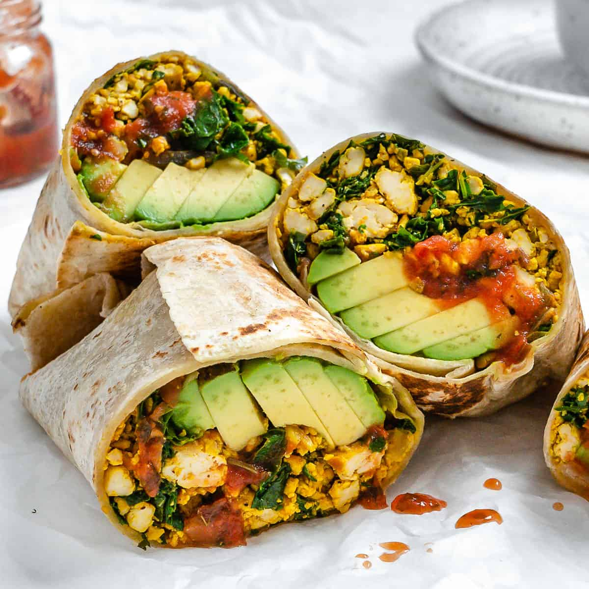

Breakfast Burrito

vegetarian burrito
Burritos have endless possibilties when it comes
to preparing them. Think of the tortilla as an empty suitcase ready to fill.
Ingredients
- large flour tortilla
- 2 large eggs
- 2 vegetarian sausage patties (we use MorningStar)
- 1 tbsp taco seasoning
- pepper jack cheese
- sour cream
- sliced avocado
Steps
- preheat oven to 350
- heat pan to med high with a little butter or oil
- beat eggs with taco seasoning until mixed
- cook veggie sausage (about 5min until done)
- cook eggs until almost fluffy
- warm tortilla (makes it easier to fold)
- place eggs onto the tortilla and crumble veggie sausage on top
- sprinkle with cheese and add sour cream/ avocado
- fold into burrito and place in oven for 3-5